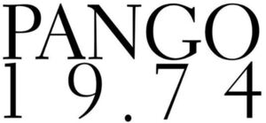

Trade Mark Journal No.2025/041 10 October 2025
WO0000001864675 (18,25,35)
Office of origin: Italy
Date of International Registration:28 February 2025
Date of designation in the UK:
28 February 2025

The trademark consists of an imprint depicting the wording PANGO 19.74 in fancy characters, the portion PANGO being arranged above the portion 19.74.
International priority date claimed: 19 November 2024
(Italy)
(302024000171114)
- Class 18
- Travelling cases of leather; credit card cases of leather; key cases; key cases of leather or imitation leather; carry-on bags; travel luggage; trunks [luggage]; footlockers; vanity cases, not fitted; bags; Boston bags; shoulder bags; barrel bags; wheeled bags; beach bags; bags for sports; travelling bags [leatherware]; textile shopping bags; chain mesh purses; bags for sports clothing; bags [envelopes, pouches] of leather, for packaging; bags for carrying animals; gentlemen's handbags; drawstring pouches; small bags for men; felt pouches; purses; handbags; travelling sets [leatherware]; evening purses [handbags]; duffle bags for travel; holdalls for sports clothing; pouches for holding make-up, keys and other personal items; bags for umbrellas; document holders [carrying cases]; name card cases; briefcases; school bags; cases of leather or leatherboard; girths of leather; cords of leather; labels of leather; sling bags for carrying infants, slings for carrying infants; belt bags; dutch bags [hand bags]; folding briefcases; pocket wallets; leather wallets; card wallets [leatherware]; business card cases; credit card cases [wallets]; card cases [notecases]; music cases; coin purses, not of precious metal; randsels [Japanese school satchels]; net bags for shopping; haversacks; travelling bags; shoe bags for travel; canvas shopping bags; boxes of leather or leatherboard; luggage tags; frames for bags [structural parts of bags]; shoulder straps; pouches of leather; attaché cases; attaché cases of imitation leather; overnight suitcases; suitcases; suitcases with wheels; garment bags for travel; daypacks; rucksacks; leather and imitations of leather; animal skins and hides; luggage and carrying bags; umbrellas and parasols; walking sticks; whips, harness and saddlery; collars, leashes and clothing for animals.
- Class 25
- Formal wear; suits; women's suits; men's suits; clothing of leather; clothing of imitations of leather; leisure wear; clothing for sports; combinations [clothing]; shirts; shirts for wear with suits; chemisettes; short-sleeve shirts, tee-shirts; skirts; trousers; leggings [leg warmers]; shorts; hosiery; knitwear [clothing]; sports jerseys; maillots [hosiery]; sweaters; pullovers; sweatshirts; hooded sweatshirts; waistcoats; fleece vests; quilted vests; jackets [clothing]; suit jackets; wind-resistant jackets; coats; weatherproof clothing; underwear; bathing suits; underpants; panties, shorts and briefs; stockings; socks; neckties; ascots; scarves; foulards [clothing]; belts [clothing]; leather belts [clothing]; textile belts [clothing]; money belts [clothing]; gloves made of skin, hide or fur; footwear for men, women and children; leisure shoes; boots and shoes; dress shoes; leather shoes; beach shoes; gymnastic shoes; sports shoes; pumps [footwear]; sandals; fittings of metal for footwear; footwear uppers; insoles for footwear; tips for footwear; welts for footwear; hats; small hats; berets; visors being headwear; clothing, footwear, headwear.
- Class 35
- Retail and wholesale services, also on line, of travelling cases of leather, credit card cases of leather, key cases, key cases of leather or imitation leather, carry on bags, travel luggage, trunks [luggage], footlockers, vanity cases, not fitted; retail and wholesale services, also on line, of bags, Boston bags, shoulder bags, barrel bags, wheeled bags, beach bags, bags for sports, travelling bags [leatherware], textile shopping bags, chain mesh purses; retail and wholesale services, also on line, of bags for sports clothing, bags [envelopes, pouches] of leather, for packaging, bags for carrying animals, gentlemen's handbags, drawstring pouches, small bags for men, felt pouches, purses, handbags, travelling sets [leatherware], evening purses [handbags]; retail and wholesale services, also on line, of duffle bags for travel, holdalls for sports clothing, pouches for holding make-up, keys and other personal items, bags for umbrellas, document holders [carrying cases], name card cases, briefcases, school bags, cases of leather or leatherboard, girths of leather; retail and wholesale services, also on line, of cords of leather, labels of leather, sling bags for carrying infants, slings for carrying infants, belt bags, clutch bags [hand bags], folding briefcases, pocket wallets, leather wallets, card wallets [leatherware]; retail and wholesale services, also on line, of business card cases, credit card cases [wallets], card cases [notecases], music cases, coin purses, not of precious metal, randsels [Japanese school satchels], net bags for shopping, haversacks, travelling bags, shoe bags for travel, canvas shopping bags, boxes of leather or leatherboard; retail and wholesale services, also on line, of luggage tags, frames for bags [structural parts of bags], shoulder straps, pouches of leather, attaché cases, attaché cases of imitation leather, overnight suitcases, suitcases, suitcases with wheels, garment bags for travel, daypacks, rucksacks; retail and wholesale services, also on line, of formal wear, suits, women's suits, men's suits, clothing of leather, clothing of imitations of leather, leisure wear, clothing for sports, combinations [clothing], shirts, shirts for wear with suits, chemisettes, short sleeve shirts; retail and wholesale services, also on line, of tee-shirts, skirts, trousers, leggings [leg warmers], shorts, hosiery, knitwear [clothing], sports jerseys, maillots [hosiery], sweaters, pullovers, sweatshirts, hooded sweatshirts, waistcoats, fleece vests, quilted vests; retail and wholesale services, also on line, of jackets [clothing], suit jackets, wind-resistant jackets, coats, weatherproof clothing, underwear, bathing suits, underpants, panties, shorts and briefs, stockings, socks, neckties, ascots, scarves, foulards [clothing]; retail and wholesale services, also on line, of belts [clothing], leather belts [clothing], textile belts [clothing], money belts [clothing], gloves made of skin, hide or fur, footwear for men, women and children, leisure shoes, boots and shoes, dress shoes; retail and wholesale services, also on line, of leather shoes, beach shoes, gymnastic shoes, sports shoes, pumps [footwear], sandals, fittings of metal for footwear, footwear uppers, insoles for footwear, tips for footwear, welts for footwear, hats, small hats, berets, visors being headwear; presentation of goods on communication media, for retail purposes; providing commercial information and advice for consumers in the choice of products and services; sales promotion for others; outsourcing services [business assistance]; procurement services for others [purchasing goods and services for other businesses]; demonstration of goods; shop window dressing; sponsorship search; business inquiries; providing business information; commercial administration of the licensing of the goods and services of others; administration of consumer loyalty programs; distribution and dissemination of advertising materials [leaflets, prospectuses, printed material, samples]; providing commercial and business contact information; provision of an online marketplace for buyers and sellers of goods and services; marketing; negotiation and conclusion of commercial transactions for third parties; organization of exhibitions for commercial or advertising purposes; arranging and conducting of trade fairs for commercial or advertising purposes; organization of fashion shows for promotional purposes; arranging commercial transactions, for others, via on-line shops; publication of publicity texts; writing of publicity texts; import-export agency services; business administration services for the processing of sales made on the Internet; commercial intermediation services; on-line ordering services; computerized on-line ordering services; administrative processing of purchase orders; franchising services in the nature of provision of assistance with managing affairs for the setup and operation of an industrial or commercial enterprise; assistance in the development and management of a commercial enterprise; business advice relating to franchising; business management services relating to franchising; business advisory services relating to the establishment and operation of franchises; advisory services relating to the operation of franchises; business management advisory services relating to franchising; help in the management of business affairs or commercial functions of an industrial or commercial enterprise; commercial or industrial management assistance; consultancy regarding business organisation and business economics; presentation and demonstration of goods; influencer marketing; providing business information via a website; online advertising on a computer network; organization of events, exhibitions, fairs and shows for commercial, promotional and advertising purposes; dissemination of advertising matter; arranging and conducting of commercial events; sales promotion through customer loyalty programs; commercial information and advice for consumers; business information and inquires; advertising; business management, organization and administration; office functions.
CONFEZIONI PANGO S.P.A.
Representative: Dr. Modiano & Associati SpA, Via Meravigli 16, I-20123 Milano, ITALY